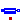
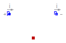
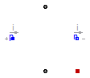

Extends from Modelica.Icons.VariantsPackage (Icon for package containing variants).
| Name | Description |
|---|---|
| Brush | Model considering voltage drop of carbon brushes |
| Voltage drop of carbon brushes | |
| Model of stray load losses dependent on current and speed | |
|  Core | Model of core losses |

Model of voltage drop and losses of carbon brushes. For currents between -ILinear and ILinear
the voltage drop shows a linear behavior as depicted in Fig. 1.
For positive currents greater or equal than ILinear the voltage drop equals V.
For negative currents less or equal than -ILinear the voltage drop equals -V.
 |
| Fig. 1: Model of voltage drop of carbon brushes |
The voltage drop v is the total voltage drop of all series connected brushes.
If it is desired to neglect brush losses, set brushParameters.V = 0 (this is the default).
Extends from Modelica.Electrical.Analog.Interfaces.OnePort (Component with two electrical pins p and n and current i from p to n).
| Type | Name | Default | Description |
|---|---|---|---|
| BrushParameters | brushParameters | Brush loss parameters |
| Type | Name | Description |
|---|---|---|
| PositivePin | p | Positive pin (potential p.v > n.v for positive voltage drop v) |
| NegativePin | n | Negative pin |
| HeatPort_a | heatPort | Heat port of the resistor |
model Brush "Model considering voltage drop of carbon brushes"
extends Modelica.Electrical.Analog.Interfaces.OnePort;
parameter Machines.Losses.BrushParameters brushParameters
"Brush loss parameters";
Modelica.Thermal.HeatTransfer.Interfaces.HeatPort_a heatPort
"Heat port of the resistor";
equation
if (brushParameters.V<=0) then
v = 0;
else
v = smooth(1, if (i>+brushParameters.ILinear) then +brushParameters.V else
if (i<-brushParameters.ILinear) then -brushParameters.V else
brushParameters.V*i/brushParameters.ILinear);
end if;
heatPort.Q_flow = -v*i;
end Brush;
 Modelica.Electrical.Machines.Losses.DCMachines.brushVoltageDrop
Modelica.Electrical.Machines.Losses.DCMachines.brushVoltageDrop
Calculates the voltage drop of carbon brushes, according to Brush losses, e.g., used for initial equations.
Extends from Modelica.Icons.Function (Icon for functions).
| Type | Name | Default | Description |
|---|---|---|---|
| BrushParameters | brushParameters | Brush loss parameters | |
| Current | i | Actual current [A] |
| Type | Name | Description |
|---|---|---|
| Voltage | v | Voltage drop [V] |
function brushVoltageDrop "Voltage drop of carbon brushes"
extends Modelica.Icons.Function;
input Machines.Losses.BrushParameters
brushParameters "Brush loss parameters";
input Modelica.SIunits.Current i "Actual current";
output Modelica.SIunits.Voltage v "Voltage drop";
algorithm
if (brushParameters.V<=0) then
v := 0;
else
v :=if (i > +brushParameters.ILinear) then +brushParameters.V else
if (i < -brushParameters.ILinear) then -brushParameters.V else
brushParameters.V*i/brushParameters.ILinear;
end if;
end brushVoltageDrop;

The stray load loss torque is
tau = PRef/wRef * (i/IRef)^2 * (w/wRef)^power_w
where i is the current of the machine and w is the actual angular velocity.
The dependency of the stray load torque on the angular velocity is modeled by the exponent power_w.
The stray load losses are modeled such way that they do not cause a voltage drop in the electric circuit. Instead, the dissipated losses are considered through an equivalent braking torque at the shaft.
If it is desired to neglect stray load losses, set strayLoadParameters.PRef = 0 (this is the default).
Extends from Modelica.Electrical.Analog.Interfaces.OnePort (Component with two electrical pins p and n and current i from p to n), Machines.Interfaces.FlangeSupport (Shaft and support).
| Type | Name | Default | Description |
|---|---|---|---|
| StrayLoadParameters | strayLoadParameters | Stray load loss parameters |
| Type | Name | Description |
|---|---|---|
| PositivePin | p | Positive pin (potential p.v > n.v for positive voltage drop v) |
| NegativePin | n | Negative pin |
| Flange_a | flange | Shaft end |
| Flange_a | support | Housing and support |
| HeatPort_a | heatPort | Heat port for modeling the heat flow |
model StrayLoad
"Model of stray load losses dependent on current and speed"
extends Modelica.Electrical.Analog.Interfaces.OnePort;
extends Machines.Interfaces.FlangeSupport;
parameter Machines.Losses.StrayLoadParameters strayLoadParameters
"Stray load loss parameters";
Modelica.Thermal.HeatTransfer.Interfaces.HeatPort_a heatPort
"Heat port for modeling the heat flow";
equation
v = 0;
if (strayLoadParameters.PRef<=0) then
tau = 0;
else
tau = -strayLoadParameters.tauRef*(i/strayLoadParameters.IRef)^2*
smooth(1,if w >= 0 then +(+w/strayLoadParameters.wRef)^strayLoadParameters.power_w else
-(-w/strayLoadParameters.wRef)^strayLoadParameters.power_w);
end if;
heatPort.Q_flow = tau*w;
end StrayLoad;

Core losses can be separated into eddy current and hysteresis losses. The total core losses can thus be expressed as
p = PRef * (ratioHysteresis * (wRef / w) + 1 - ratioHysteresis) * (v / VRef)^2
where w is the actual angular velocity and v is the actual voltage. The term ratioHysteresis is the ratio
of the hysteresis losses with respect to the total core losses for reference inner voltage and reference angular velocity.
For the voltage and angular velocity range with respect to Fig. 1,
the dependency of total core losses on the parameter ratioHysteresis is depicted in Fig. 2.
 |
| Fig. 1: Voltage versus angular velocity |
 |
Fig. 2: Core losses versus angular velocity with parameter ratioHysteresis |
In the current implementation it is assumed that ratioHysteresis = 0. This parameter cannot be changed due to compatibility reasons.
Extends from Modelica.Electrical.Analog.Interfaces.OnePort (Component with two electrical pins p and n and current i from p to n).
| Type | Name | Default | Description |
|---|---|---|---|
| CoreParameters | coreParameters | Armature core losses | |
| Losses | |||
| AngularVelocity | w | Remagnetization angular velocity [rad/s] | |
| Type | Name | Description |
|---|---|---|
| PositivePin | p | Positive pin (potential p.v > n.v for positive voltage drop v) |
| NegativePin | n | Negative pin |
| HeatPort_a | heatPort | Heat port for modeling the heat flow |
model Core "Model of core losses"
extends Modelica.Electrical.Analog.Interfaces.OnePort;
parameter Machines.Losses.CoreParameters coreParameters(final m=1)
"Armature core losses";
Modelica.Thermal.HeatTransfer.Interfaces.HeatPort_a heatPort
"Heat port for modeling the heat flow";
input Modelica.SIunits.AngularVelocity w "Remagnetization angular velocity";
Modelica.SIunits.Conductance Gc "Variable core loss conductance";
protected
Modelica.SIunits.AngularVelocity wLimit = noEvent(max(noEvent(abs(w)),coreParameters.wMin))
"Limited angular velocity";
equation
if (coreParameters.PRef<=0) then
Gc = 0;
i = 0;
else
Gc = coreParameters.GcRef;
// * (coreParameters.wRef/wLimit*coreParameters.ratioHysteresis + 1 - coreParameters.ratioHysteresis);
i = Gc*v;
end if;
heatPort.Q_flow = -v*i;
end Core;